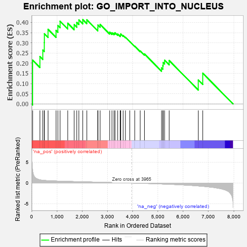
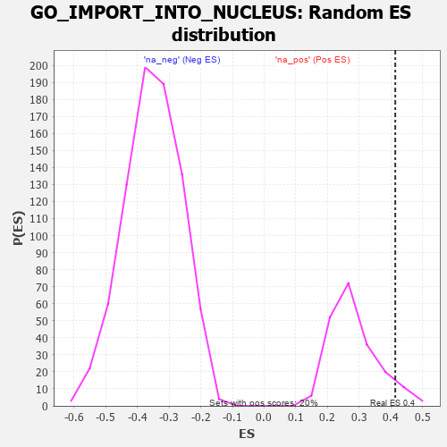

| | | Dataset | 7d |
| Phenotype | NoPhenotypeAvailable |
| Upregulated in class | na_pos |
| GeneSet | GO_IMPORT_INTO_NUCLEUS |
| Enrichment Score (ES) | 0.41404024 |
| Normalized Enrichment Score (NES) | 1.4636003 |
| Nominal p-value | 0.07 |
| FDR q-value | 0.32045633 |
| FWER p-Value | 1.0 |
Table: GSEA Results Summary

Fig 1: Enrichment plot: GO_IMPORT_INTO_NUCLEUS
Profile of the Running ES Score & Positions of GeneSet Members on the Rank Ordered List
| PROBE | GENE SYMBOL | GENE_TITLE | RANK IN GENE LIST | RANK METRIC SCORE | RUNNING ES | CORE ENRICHMENT | | 1 | SIX2 | | | 40 | 3.152 | 0.2148 | Yes |
| 2 | NUP85 | | | 329 | 0.772 | 0.2323 | Yes |
| 3 | SUFU | | | 443 | 0.665 | 0.2645 | Yes |
| 4 | NXT2 | | | 502 | 0.628 | 0.3009 | Yes |
| 5 | NUP54 | | | 505 | 0.627 | 0.3444 | Yes |
| 6 | TNPO3 | | | 651 | 0.576 | 0.3663 | Yes |
| 7 | ZPR1 | | | 967 | 0.491 | 0.3608 | Yes |
| 8 | AKT1 | | | 1040 | 0.476 | 0.3849 | Yes |
| 9 | NUP93 | | | 1127 | 0.459 | 0.4061 | Yes |
| 10 | NUP88 | | | 1429 | 0.404 | 0.3963 | Yes |
| 11 | TNPO1 | | | 1684 | 0.359 | 0.3894 | Yes |
| 12 | NUP58 | | | 1787 | 0.340 | 0.4002 | Yes |
| 13 | NUP62 | | | 1871 | 0.324 | 0.4123 | Yes |
| 14 | DMAP1 | | | 2025 | 0.301 | 0.4140 | Yes |
| 15 | SYK | | | 2186 | 0.278 | 0.4133 | No |
| 16 | BAG3 | | | 2620 | 0.209 | 0.3733 | No |
| 17 | NUP50 | | | 2625 | 0.209 | 0.3874 | No |
| 18 | PHB2 | | | 2712 | 0.197 | 0.3903 | No |
| 19 | CHP1 | | | 3089 | 0.138 | 0.3525 | No |
| 20 | RBM22 | | | 3182 | 0.125 | 0.3496 | No |
| 21 | NUP98 | | | 3261 | 0.112 | 0.3476 | No |
| 22 | SMAD3 | | | 3303 | 0.105 | 0.3497 | No |
| 23 | MED1 | | | 3405 | 0.089 | 0.3432 | No |
| 24 | UFM1 | | | 3506 | 0.077 | 0.3359 | No |
| 25 | UBR5 | | | 3518 | 0.074 | 0.3397 | No |
| 26 | HDAC3 | | | 3528 | 0.072 | 0.3436 | No |
| 27 | NOLC1 | | | 3623 | 0.056 | 0.3357 | No |
| 28 | NF1 | | | 3713 | 0.040 | 0.3272 | No |
| 29 | RAB18 | | | 3886 | 0.013 | 0.3065 | No |
| 30 | DDX20 | | | 4083 | -0.021 | 0.2832 | No |
| 31 | RAN | | | 4299 | -0.059 | 0.2602 | No |
| 32 | LRRK2 | | | 4467 | -0.087 | 0.2453 | No |
| 33 | IPO7 | | | 5142 | -0.236 | 0.1768 | No |
| 34 | SMO | | | 5195 | -0.247 | 0.1874 | No |
| 35 | IPO5 | | | 5207 | -0.248 | 0.2033 | No |
| 36 | CDK1 | | | 5264 | -0.262 | 0.2145 | No |
| 37 | CBLB | | | 5445 | -0.306 | 0.2132 | No |
| 38 | TPR | | | 6597 | -0.709 | 0.1175 | No |
| 39 | NXT1 | | | 6774 | -0.797 | 0.1509 | No |
Table: GSEA details [plain text format]

Fig 2: GO_IMPORT_INTO_NUCLEUS: Random ES distribution
Gene set null distribution of ES for GO_IMPORT_INTO_NUCLEUS